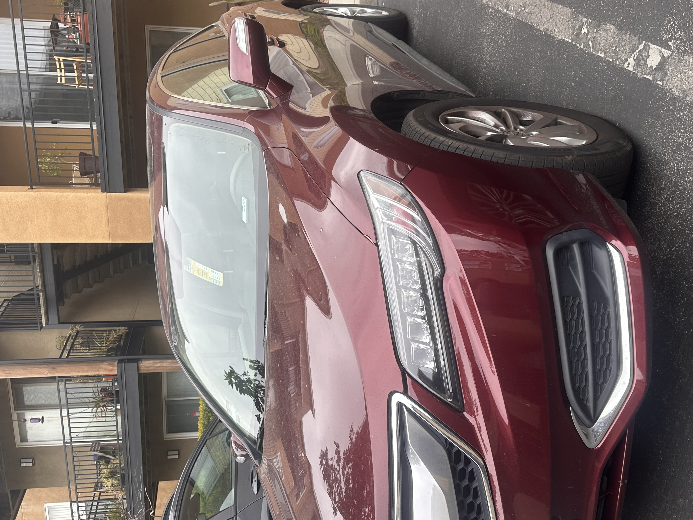

Lab 5: Data Types and Variables
Challenge
We had to experiment with basic javascript data types and variables with a partner.
Problems
I had to change the CSS according to the lab which was challening
Since they were really minor problems I tried to watch tutorials on youtube.
Reflection
I probably worked for about 4 hours on this assignment trying to figure out what mistakes I made. What was hard about this is that I didn't know to link my javascript into my html while also preserving my css. Almost everything else in this assignment was pretty easy to do
Results
Look below for the javascript. I worked the harderst for this part! Overall, I would say I'm starting to understand the nature of javascript, but I do think it takes a lot longer than other coding we've done. The link right below this one is the link for lab 5 index.html